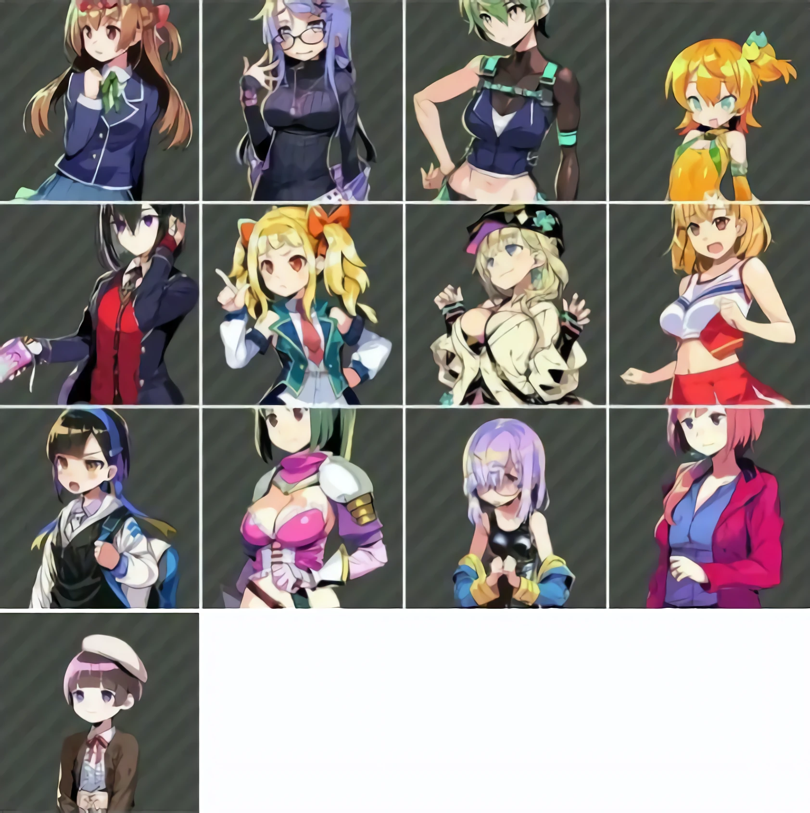

特殊人才一览
特殊人才是据点经营里 13 名有独立剧情、语音与专属事件的人材。 她们随主线剧情推进陆续解锁，解锁后要在固定的地图位置打一场并捕获， 不是随机遭遇。下表的「区域 → 位置」就是各自的所在地。
| 序号 | 姓名 | 区域 | 位置 |
|---|---|---|---|
| 1 | 镰濑衣缝 | 惠海路 | 惠海碑 |
| 2 | 辻理理绘 | 美术馆 | 亚总义财阀收书简 |
| 3 | 阿久津恭花 | 化学研究所 | 过道 |
| 4 | 岳见加乃乃 | 东云码头 | 货港 F06 |
| 5 | 神麓凛 | 亚商城 | 布袜店 |
| 6 | 春夏秋诺艾尔 | ASP | 会议室 |
| 7 | 橘心瑠姬 | 后亚地 | 意式餐厅 H160 |
| 8 | 槙环 | 芽生宿舍 | 浴室 |
| 9 | 清水千晴 | 仕山医疗所 | 售货机角 |
| 10 | 笹月文 | 产业园区 | 间 G2 |
| 11 | 小林早奈 | 第三学校 | 厕所 |
| 12 | 高桥菜菜实 | 产峰工业 | 电源室 |
| 13 | 三浦珠子 | 造船所 | 钢材堆放处 |
读表要点
- 「区域」是大地图名，「位置」是区域内的具体点位。例如第 1 项要在惠海路的
惠海碑附近找。
- 表按剧情解锁顺序排列，不是捕获难度顺序；解锁先后与实际去抓的时间可以不一致。
- 同一区域可能出现多名特殊人才（例如美术馆、产业园区都各有一处），
进图前先对一下具体点位。
- 几处用字差异（原始清单与公开攻略不完全一致，本站择一收录并在此说明，便于对照）：
- 第 3 项「过道」：攻略作「东过道」。
- 第 4 项「货港 F06」：攻略作「货港 FO6」——字母
O与数字0在低清截图里容易混淆。 - 第 8 项「槙环」：部分资料作「慎环」。
- 第 8 项「浴室」：原始清单作「浴室笹」，末字疑为误入，攻略底本作「芽生宿舍的浴室」。
- 第 10 项「笹月文」：部分资料作「笆月文」。
机制说明
- 要先触发登场剧情。人物会在剧情里先露面一次，之后才能去对应地点找到她。
- 战斗中最后一个击杀该目标才能俘获，用群体技能一并清场同样满足条件。
- 未列出的其他区域也可能刷出普通人材（无独立剧情的那种），本表只收 13 名特殊人才。
13 人一览
下图为 13 名特殊人才的头像，按剧情出现顺序排列（同样可在 特殊人才任务条件 中查到各自的三段任务）。

内容出处
清单由站内整理录入，已与公开攻略逐条核对，13 条姓名与地点全部一致： 《多娜多娜一起做坏事吧》特殊人才有哪些 全特殊人才位置
https://www.bulexiu.com/n/3695.html捕获机制（先触发登场剧情、最后一个击杀才俘获）同样出自该攻略。 「13 名特殊人才」这一总数与萌娘百科相关条目的表述一致。
任务条件单独成页：每位特殊人才的三段任务流程已收录在 特殊人才任务条件，含出现顺序、 属性门槛、派遣要求与最后的处置 / 留队分歧。